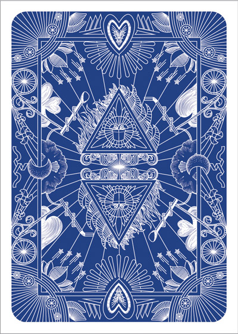

<div *ngIf="!pantallaPerdida">
    <div>
        
        
        <div style=" position: absolute; border: 1px solid rgba(0, 0, 0, 0.459); box-shadow: 10px 5px 5px 5px rgba(0, 0, 0, 0.055);margin: 0 auto; right: 22%; margin-top: 8%; 
        background-color: rgb(248, 247, 241);height: 60vh; width: 22vw; text-align: center;">
        <p style="font-size: 8vw; margin-top: 40%;">{{numeroAnterior}}</p></div>
    
        <div id="cartaMazo" *ngIf="cartaMazo" style="position: absolute; box-shadow: 10px 5px 5px 5px rgba(0, 0, 0, 0.055); 
        background-color: rgb(248, 247, 241); border: 1px solid rgba(0, 0, 0, 0.459) ;margin: 0 auto; left: 23%; 
        margin-top: 8%;height: 60vh; width: 22vw; text-align: center;">
        <p style="font-size: 8vw; margin-top: 40%;">{{numeroActual}}</p></div>
    </div>
    <div style="position: absolute; margin-top: 1%; margin-left: 10px; right: 41%;" class="contenedor-puntos">
        <p style="font-weight: bold; font-size: 1.8rem;">PUNTOS: {{puntos}}</p>
    </div>
    <div style="display: flex; margin-top: 38%; position: absolute; right: 39%;">
        <button id="btnMayor" (click)="cambiarPosicion('mayor')" class="btn estilo-boton" style="margin-right: 10px;">Mayor</button>
        <button id="btnMenor" (click)="cambiarPosicion('menor')" class="btn estilo-boton">Menor</button>
    </div>
</div>

<div *ngIf="pantallaPerdida" class="row" style="max-width: 100%;">
    <div class="fuegos-artificiales col text-center">
        
    </div>
    <div class="text-center" style="margin-top: 3%;">
        <h1 style="font-size: 4rem; color: white">
            PERDISTE, TU PUNTUACION FUE {{puntos}}
        </h1>
        <button (click)="ngOnInit()" class="btn btn-warning" style="margin-top: 4%; margin-right: 3%;">Volver a jugar</button>
        <button routerLink="/home" class="btn btn-warning" style="margin-top: 4%;">Volver al menu</button>
    </div>
</div>

